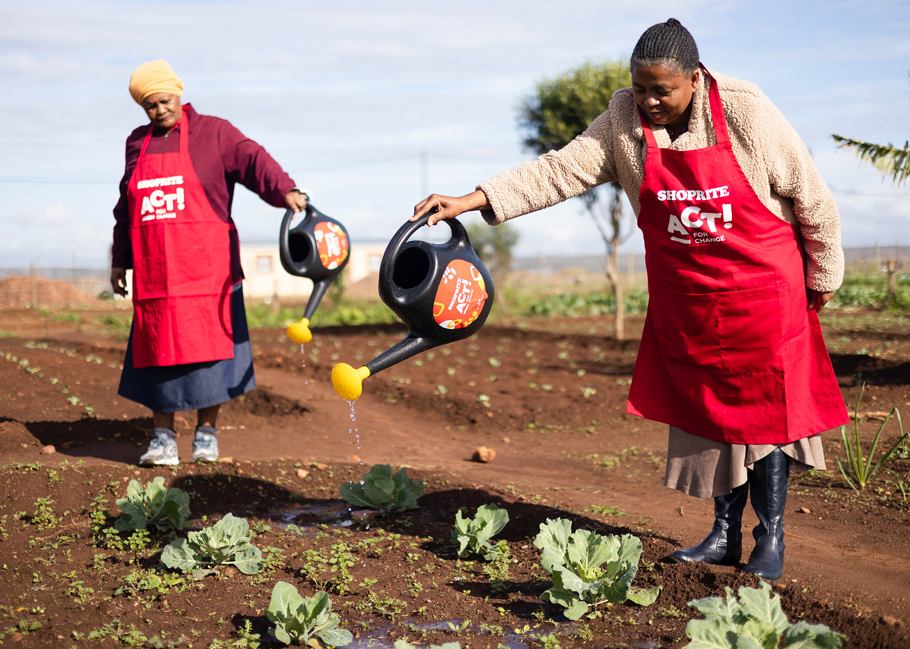

Community Market Gardens
The Market Garden programme is a food security initiative focusing on income-producing community food gardens and small-holder farmers. The programme utilises agro-ecological and bio-intensive farming methods. It combines technical skills training, expert support, and social dynamics workshops. The Market Garden programme also includes FTFA’s Business Box which supports beneficiaries to market. This includes cash flow management, banking skills, financial administration, records keeping, compliance basics, and business planning.